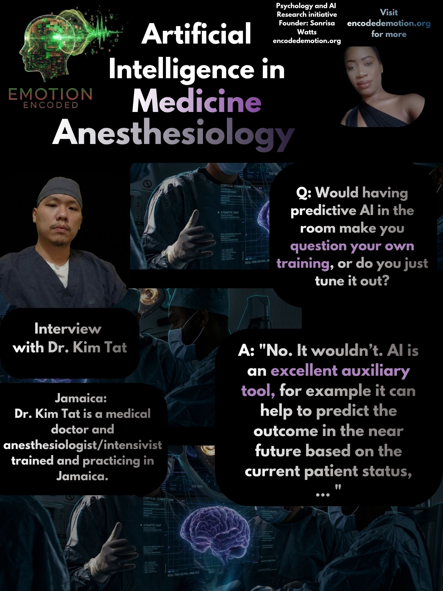

Dr. Kim Tat is a resident medical doctor specializing in anesthesiology and intensive care in Jamaica. Operating on the frontlines of critical care, where real-time monitoring and split-second decisions directly dictate patient survival, Dr. Tat’s field perspective offers crucial clarity on the practical application of clinical AI.
As healthcare systems across the Caribbean begin evaluating digital health tools and machine learning integration, understanding how frontline specialists view algorithmic support is vital. Dr. Tat’s insights outline clear boundaries: where predictive AI can meaningfully assist clinical care, and why ultimate decision-making power must remain firmly in human hands.
A central debate in healthcare AI is automation bias, which is the operational risk that healthcare providers, particularly during high-stress scenarios or after working long hours, might passively defer to an automated recommendation. In anesthesiology and critical care, physical fatigue and cognitive overload are real challenges. However, Dr. Tat firmly dismisses the idea that physical exhaustion would lead a clinician to blindly follow an algorithmic prompt.
Field Question:
"At the end of a long shift, do you think you might ever blindly follow an AI output for one of your medical decisions?"
Dr. Kim Tat: "No. It would never be blindly."
This highlights a key safety mechanism built into medical practice: institutional training, personal accountability, and professional judgment act as constant checks against over-reliance on digital systems. Regardless of fatigue, the clinician remains an active filter, critically reviewing machine insights before administering care.
Predictive AI algorithms excel at continuously processing physiological data, such as fluctuations in blood pressure, heart rate variability, or oxygen saturation, to forecast potential complications before they visually manifest.
Field Question:
"Would having predictive AI in the room make you question your own training, or do you just tune it out?"
Dr. Kim Tat: "No. It wouldn’t. AI is an excellent auxiliary tool, for example it can help to predict the outcome in the near future based on the current patient status, it does help in my practice."
Rather than causing cognitive confusion or overriding established protocols, predictive models act as a high-tech radar. They augment early detection, allowing clinicians to intervene proactively rather than reactively.
As AI tools mature, a central strategic question for Caribbean healthcare leadership is how these technologies should be structured: should they act as autonomous systems handling routine duties ("autopilots"), or as collaborative decision-support tools ("co-piloting")? Dr. Tat draws a definitive line regarding clinical agency and systemic integration.
Field Question:
"If AI is fully incorporated into Caribbean hospitals, as a co-pilot (sharing the active workload) or an autopilot (taking over routine tasks while you supervise)?"
Dr. Kim Tat: "Co-pilot and with supervision. The final decision is still being made by the clinician. AI is mainly used for data collection, data analysis, prediction model etc. They are not ready to replace an anaesthesiologist as a full work force."
While machine learning can streamline data collection, execute rapid statistical analysis, and generate predictive models, it lacks human context, moral reasoning, and physiological intuition. Full clinical authority, and the ethical responsibility that comes with it, must remain with the physician.
Core Research Takeaway
In high-stakes, fast-moving environments like anesthesiology and critical care, artificial intelligence serves a clear and highly effective purpose: aggregating complex data streams, detecting subtle patterns, and predicting patient trajectories. However, machine outputs are diagnostic support, not definitive orders. The technology functions as an intelligent co-pilot, enhancing clinician foresight and streamlining clinical workflow without diminishing human oversight or displacing physician leadership at the bedside.
Sonrisa Watts // Emotion Encoded // 2026